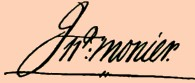

John Monier
John Monier came to America with the British army during the Great War for Empire.
This French-ancestry opportunist married Albany native Mary Sharp in 1763. Although their long-term marriage produced no children, shortly thereafter the couple settled into a new house on the hill along the King's Highway.
Monier prospered in the Albany setting although his fortune was dependent on the provincial government and a dwindling number of royal adherents. By 1769, he had been appointed to replace Henry Van Schaack as postmaster at Albany. Using his position to carve out a conductive role in colonial commerce by serving William Johnson and other frontier developers, Monier was able to acquire wilderness land on his own behalf. He began to trade in logs and lumber and also kept boarders at his Albany home. From his earliest days in the community, he was a prominent member of St. Peters Anglican church.
However, the American Revolution ruined all of his budding enterprises. Monier managed to avoid trouble until May 1776 when he confessed to being a "King's officer." He was clapped in the Tory jail and then sent under guard to Hartford, Connecticut. A year later, he had returned to Albany. But upon declining to take an oath of allegiance, he was ordered to the fleet prison in Kingston. Claiming that he was ill, Monier was allowed to convalesce in Schenectady. Later, he was sent to the British in New York City. By the end of the war, he was lobbying the royal governor for permission to take his family to England or Canada - stating that he had served the king faithfully for twenty-four years and had suffered irreparable losses.
Although he was an overt Loyalist, Monier managed to survive the struggle and even to return to Albany. He had a house in the second ward and opened a lumberyard on the Lion Street property that he found had not been confiscated. The Albany census in 1790 placed his residence in the first ward and showed it housed one man and one woman. Although he never regained his pre-war status, he sawed, seasoned, and shipped lumber until he died. But a decade later, his widow was on the city poor roll.
Signature of John Monier on a letter to William Johnson in December 1773 covering bills for the shipment of Windsor chairs and an organ. Facsimile printed in the introduction to volume 8 of the Johnson Papers. Monier regularly procured and stored goods, handled monies, arranged for a range of services, and also used the post office on Johnson’s behalf. Sir William’s death in 1774 ended an advantageous patron-client relationship and signalled the beginning of the erosion of Monier's position in Albany.
Albany property: In September 1765, Monier leased a one acre lot on the north Side of Lion Street from the city of Albany. His house and lumber yard were located on that property. However, those locations do not appear on the city maps made by Simeon De Witt during the 1790s.
Wilderness land: In 1767, he received 6,000 acres on the east side of the Hudson opposite Fort Miller. However, his petition of 1772 to have the patent erected into the "township" of West Camden went unfulfilled.
first posted: 12/20/2000; last revised 7/20/08